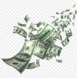

De certa maneira todos passamos por aquele momento da vida em que a grande parte das decisões são todas sem o verdadeiro raciocinio das consequências que aquilo trará. Para mim, sua chegada aconteceu durante um momento muito importante para a minha vida e que marcou todos os dias dela. 22 de Março de 2015, o melhor dia da minha existência que começa com a noticia de que iria me mudar para uma pequena cidade na costa leste dos Estados Unidos da América, a melhor decisão que já foi tomada e me imposta. Nesse momento, um sonho começou a se concretizar e grande felicidade entra em meu corpo. Porém, como tudo que é bom há de um dia acabar, no dia 4 de Julho de 2017 fui obrigado a deixar uma vida inimaginável e completa para trás. Tudo que havia conquistado foi por água abaixo com o meu retorno para o país não poderia proporcionar aquilo que existia em casa. Nesse contexto, um garoto que possuia tudo o que sonho na sua vida (amigos, dinheiro, família, proposito, felicidade) acabada de perder tudo pela decisão tomada por outros.
Com a chegada no Brasil, suas decisões pararam de fazer sentido. Após perder tudo, comecei a sentir que nunca mais seria capaz de sentir completo novamente. Com isso, quando questionado sobre qualquer assunto, desde o que comer ate o que fazeria do meu futuro, a única resposta era "tanto faz". Esse foi um dos piores momentos da minha vida até hoje. Alguns meses depois comecei a frequentar o ensino médio, no qual, a dificuldade com o retrocesso aumentava cada vez mais a escuridão que me encontrava. Depois de um tempo comecei a construr uma rotina de estudos e tristeza que perpetuou até o último dia de aula do ensino médio. Após terminar os estudos comecei a ser bombardiado por informações sobre aquilo que se tornaria a minha maior motivação, o dinheiro. Com alguns livros e palestras comecei a enxergar o dinheiro em tudo, desde de produtos, tempo e até relações sociais.
 VOLTAR PARA A PÁGINA INICIAL!